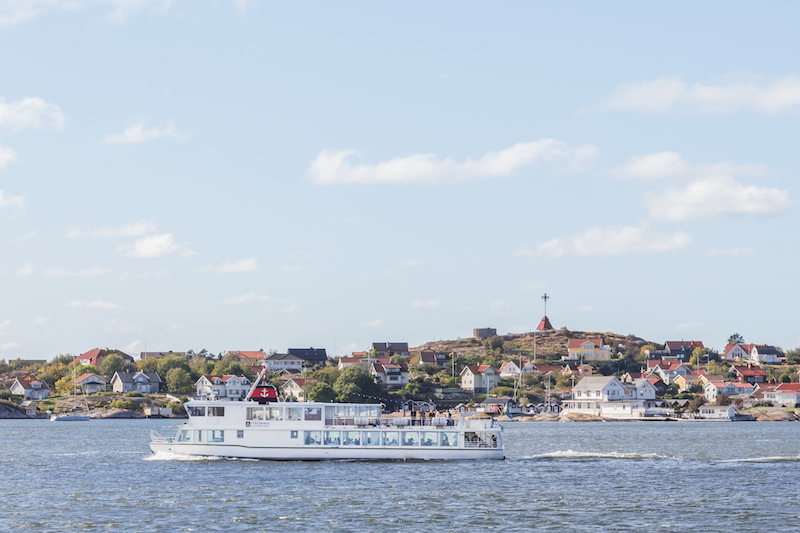
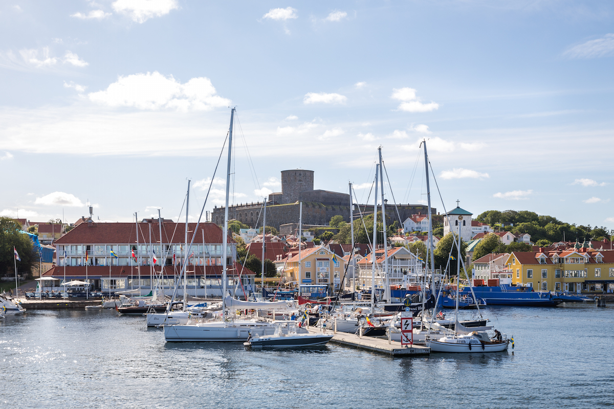

Excursion to Marstrand
 We will have the conference excursion on Thusday 10 August. The excursion consists of a boat trip to, and a stay on, the picturesque island of Marstrand. A boat picks us up directly at the conference venue, and takes us through the harbour area, towards the open sea, turning north, through the archipelago, all the way to Marstrand. There, we will have a guided tour through the old town of Marstrand, followed by a dinner in the dramatic castle. Afterwards, we take short ferry to the main land, where buses take us back to Gothenburg.
